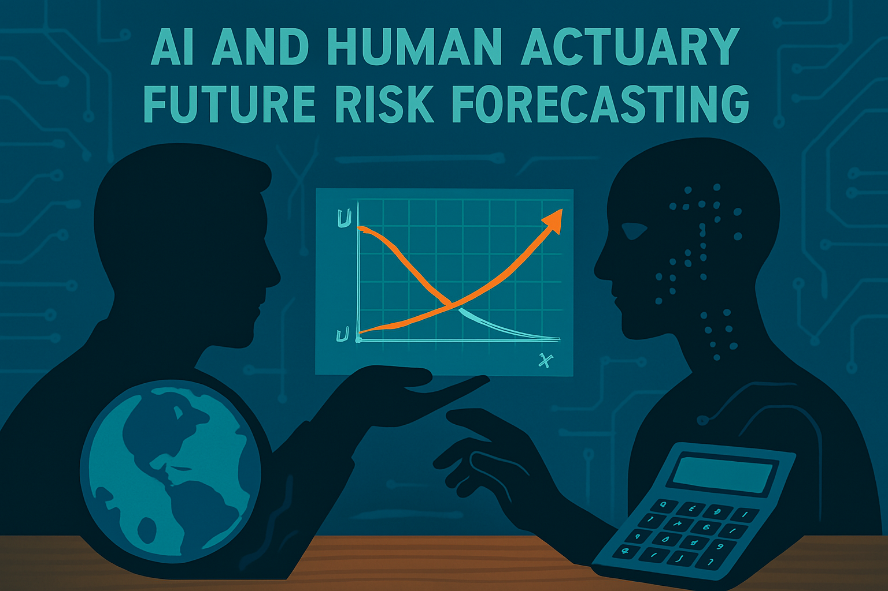

결론: 보험계리학의 미래 전망
보험계리학은 고대 위험 관리에서 시작하여 AI 시대의 글로벌 과학으로 진화하였습니다. 이 여정은 인류의 불확실성 대처 능력을 보여줍니다. 미래에는 AI와 빅데이터가 기후 변화, 사이버 리스크, 지속 가능성을 해결할 것입니다.
Actuarial science has evolved from ancient risk management into a global science of the AI era. This journey showcases humanity’s ability to address uncertainty. In the future, AI and big data will tackle climate change, cyber risks, and sustainability.
그림 10.1: AI와 계리학의 미래 협업, 2025
보험계리학은 보험을 넘어 금융·헬스케어로 확장되며, 윤리적 표준이 중요해질 것입니다. 이 책이 보험계리학의 과거를 이해하고 미래를 준비하는 데 도움이 되기를 바랍니다.
Actuarial science is expanding beyond insurance into finance and healthcare, where ethical standards will become increasingly important. I hope this book helps readers understand the past of actuarial science and prepare for its future.
출처(References)
- International Actuarial Association (2025). “Future of Actuarial Science in AI Era.” IAA Reports.
- Society of Actuaries (2025). “ESG and Actuarial Practice.” SOA Publications.